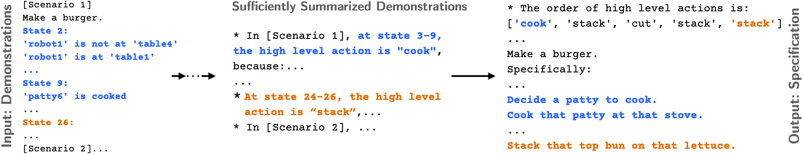
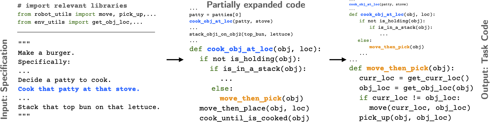

Abstract
Language instructions and demonstrations are two natural ways for users to teach robots personalized tasks. Recent progress in Large Language Models (LLMs) has shown impressive performance in translating language instructions into code for robotic tasks. However, translating demonstrations into task code continues to be a challenge due to the length and complexity of both demonstrations and code, making learning a direct mapping intractable. This paper presents Demo2Code, a novel framework that generates robot task code from demonstrations via an extended chain-of-thought and defines a common latent specification to connect the two. Our framework employs a robust two-stage process: (1) a recursive summarization technique that condenses demonstrations into concise specifications, and (2) a code synthesis approach that expands each function recursively from the generated specifications. We conduct extensive evaluation on various robot task benchmarks, including a novel game benchmark Robotouille, designed to simulate diverse cooking tasks in a kitchen environment.
Method Overview
(1) Recursive Summarization: summarize demonstrations to task specifications
In stage 1, the LLM first summarizes each demonstration individually. Once all demonstrations are sufficiently summarized, they are then jointly summarized in the final step as the task specification.
In the example, the LLM is asked to perform some intermediate reasoning (e.g. identifying the order of the high-level action) before outputting the specification (starting at "Make a burger...")
(2) Recursive expansion: synthesize code from the task specification
In stage 2, given a task specification, the LLM first generates high-level task code that can call undefined functions. It then recursively expands each undefined function until eventually terminating with only calls to the existing APIs imported from the robot's low-level action and perception libraries.
In the example, the function cook_obj_at_loc is an initially undefined function that the LLM calls when it first generates the high-level task code. In contrast, the function move_then_pick is a function that only uses existing available APIs.
Qualitative Result
Demo2Code can successfully complete various cooking task while accomadting to a user's preference.


Detailed Results
Demo2Code is compared against three other methods.
- Lang2Code: a prior work CodeAsPolicies, which generates code only from language instruction
- DemoNoLang2Code: an ablation method, which generates code from demonstrations only without a language instruction
- Spec2Code: an oracle method, which generates code detailed specifications on how to complete a task
(1) Robotouille, Cooking Task Simulator

Demo2Code can infer different users' preferences.
In this Robotouille example, Demo2Code is able to summarize demonstrations and identify different users' preferences on how to make a burger (e.g. whether to include lettuce or cheese). Then, it generates personalized burger cooking code to use the user's preferred ingredients.
(2) Tabletop Manipulation Simulator

Demo2Code can ground ambiguous language instruction.
In this tabletop example, Demo2Code successfully extracts specificity in tabletop tasks. Although the language instruction just ambiguously says "next to", it correctly infers from the goal is "left of". In contrast, Lang2Code lacks demonstrations and randomly chooses a spatial location while DemoNoLang2Code lacks context in what object to move.
(3) EPIC-Kitchens Dataset

Demo2Code can apply to real-world video demonstrations and identify different users' styles.
In this EPIC-Kitchens example, Demo2Code correctly summarizes different styles of users washing dishes from demonstration and generates personalized dish washing code. Specifically, for one user, it extracts that this user prefers to scrub all the dishes before rinsing, while it identifies that another user prefers to scrub and rinse each dish individually.
Paper

Demo2Code: From Summarizing Demonstrations to Synthesizing Code via Extended Chain-of-Thought
Huaxiaoyue Wang, Gonzalo Gonzalez-Pumariega, Yash Sharma, Sanjiban Choudhury
@misc{wang2023demo2code,
title={Demo2Code: From Summarizing Demonstrations to Synthesizing Code via Extended Chain-of-Thought},
author={Huaxiaoyue Wang and Gonzalo Gonzalez-Pumariega and Yash Sharma and Sanjiban Choudhury},
year={2023},
eprint={2305.16744},
archivePrefix={arXiv},
primaryClass={cs.RO}
}Acknowledgements
We sincerely thank Nicole Thean (@nicolethean) for creating our art assets for Robotouille!
This template was originally made by Phillip Isola and Richard Zhang for a colorful project, and inherits the modifications made by Jason Zhang. The code can be found here.